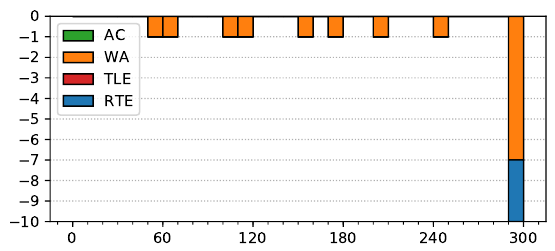

ACM ICPC World Finals 2019
Solved by 0 teams.
Shortest judge solution: 3955 bytes.

While the judges figured this for the third hardest problem, it turned out to be the hardest, and only unsolved, problem. The problem is mostly a tricky implementation problem. We can start constructing a solution iteratively: start with an empty board, and play through the moves until an inconsistency is found; then go back and add/modify a piece until everything works out, according to the following conditions:
These conditions used the following key observation: there is never any benefit to placing a king when a man would suffice, since a king might only force more choices later.
After the above has converged, there is still the problem of forced captures. If at some point a player does not take a forced capture, there must be another piece blocking it. It might as well be a man, but the color is unknown. At this point one can just try both options (recursively), and stop once one has found a solution that doesn’t require more blocking pieces and does not contain a contradiction. While there are 32 spaces on the board, in practice this completes very quickly as it is difficult to set up situations where large numbers of choices need to be made correctly.